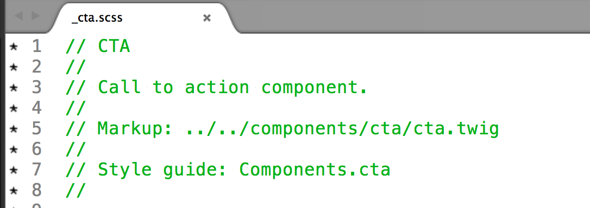

and
by Alexander Dunchev - front-end developer at FFW
It is a methodology for documenting your CSS
A set of components(blocks) which look and feel are defined by the web site styles(CSS)
Thinking of the website design as components not pages.
KSS Node: Automates the generation of the style guide
KSS node uses twig as template engine, which is the Drupal's default one
Example 
Developers
Content Editors
Questions